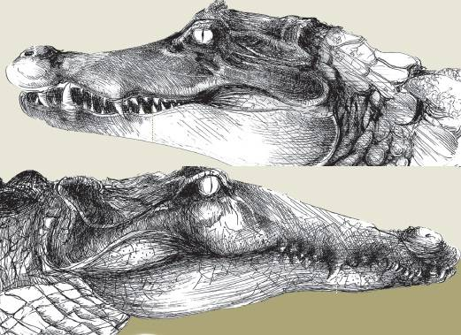
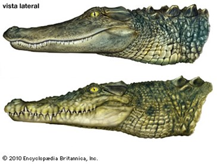

Quem nunca já olhou para um jacaré e chamou de crocodilo, ou ficou com raiva e decidiu chamar tudo de um nome só?
fonte: GoogleBem, acabaram as duidads. Pois agora vamos descobrir a grande diferença entre esses dois grandes répteis!
fonte: GoogleAs diferenças que diferneciam o jacaré do crocodilo são: suas famílias são diferente, o crocodilo vem da família Crocodylidae, já o jacaré, vem dos Alligatoridae. Mas não só isso, o crocodilo é maior e tem o seu fucinho longo e achatado, já seu amigo tem seu fucinho largo e arredondado, geralmente menor.
informação: mundo educação